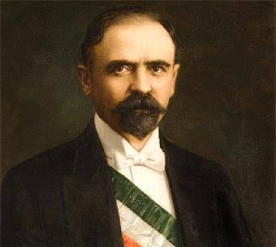

¡México se levanta en busca de libertad y justicia!
El 20 de noviembre de 1910 comenzó la Revolución Mexicana, un movimiento armado que buscaba terminar con la dictadura de Porfirio Díaz y conseguir elecciones libres, justicia social y mejores condiciones de vida para los mexicanos.
📖 ¿Qué fue la Revolución Mexicana?
Fue un movimiento político y social que comenzó en 1910. Diversos grupos de mexicanos se levantaron en armas contra el gobierno de Porfirio Díaz debido a la desigualdad, la falta de democracia y las injusticias.
👨 Francisco I. Madero

Fue uno de los principales líderes de la Revolución. Se opuso a la reelección de Porfirio Díaz y publicó el Plan de San Luis, en el que convocó al pueblo mexicano a levantarse en armas el 20 de noviembre de 1910.
⚔️ Principales causas
- La dictadura de Porfirio Díaz.
- La falta de democracia y elecciones libres.
- La desigualdad entre ricos y pobres.
- Las malas condiciones de los trabajadores.
- La pérdida de tierras de muchos campesinos.
🐎 Personajes importantes
- Emiliano Zapata: defendió los derechos de los campesinos y el reparto de tierras.
- Pancho Villa: fue uno de los principales líderes revolucionarios del norte.
- Francisco I. Madero: impulsó el movimiento contra la reelección.
- Venustiano Carranza: encabezó el movimiento constitucionalista.
🌾 El lema de Emiliano Zapata
Una de las frases más conocidas de la Revolución fue:
"Tierra y libertad"
Este lema representaba la lucha por recuperar las tierras de los campesinos y mejorar sus condiciones de vida.
📜 ¿Qué se logró?
La Revolución Mexicana transformó la vida política y social del país. Entre sus principales consecuencias estuvieron:
- La renuncia de Porfirio Díaz en 1911.
- El fin de su largo periodo de gobierno.
- La Constitución de 1917.
- El reconocimiento de derechos laborales y sociales.
- El impulso a las demandas agrarias.
🇲🇽 ¡La lucha por un México más justo!
"La Revolución Mexicana cambió el rumbo de nuestra historia y dejó una huella en la identidad de nuestro país."
📅 Fechas importantes
20 de noviembre de 1910: Inicio de la Revolución Mexicana.
25 de mayo de 1911: Porfirio Díaz renuncia a la presidencia.
5 de febrero de 1917: Se promulga la Constitución Política de México.
⭐ ¿Sabías que...?
La Revolución Mexicana fue uno de los movimientos sociales y políticos más importantes del siglo XX en América Latina. Además, en ella participaron mujeres conocidas como "soldaderas", quienes ayudaron como combatientes, enfermeras, cocineras y mensajeras.
📝 Conclusión
El 20 de noviembre representa una fecha muy importante para México porque recuerda la lucha de miles de personas por la democracia, la igualdad y la justicia social. Gracias a este movimiento, nuestro país vivió grandes cambios que forman parte de nuestra historia.